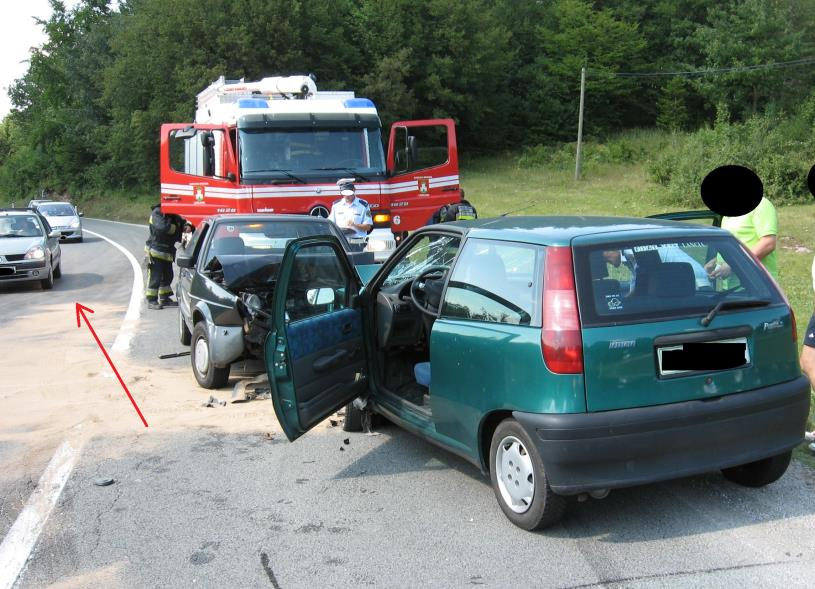
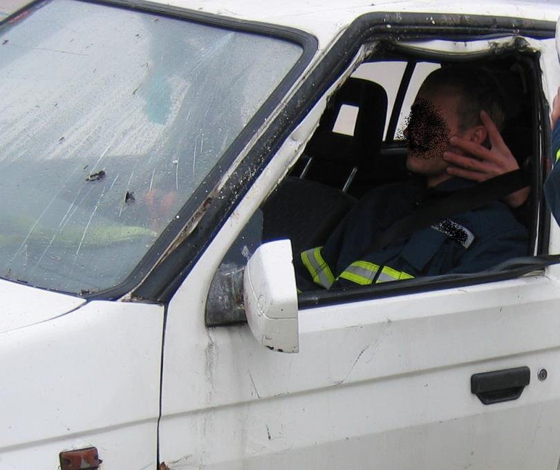

POSREDOVANJE OB PROMETNIH NEZGODAH NA CESTI
Verjetno se noben laik ne vpraša, kdaj bo naletel na prometno nezgodo in prav gotov se nihče posebej ne pripravlja na tak dogodek. Za vsakega laika (občana) je normalno in pričakovano da se, ob takšni situaciji, odzove po svojih najboljših močeh. Na žalost se vse prepogosto dogaja, da pomoči ne nudimo, čeprav bi jo lahko in bi jo morali.
Za uspešno pomoč si je potrebno zastaviti vprašanje kaj lahko storimo sami, brez posebnega predhodnega znanja. Odgovor je zelo preprost.
1. Pravilno in varno zaustavimo svoje vozilo in s tem omogočimo prost prehod reševalcem, gasilcem, policistom in ostalim intervencijskim vozilom
2. Dogodek lahko zavarujemo pred morebitnimi nadaljnjimi naleti
3. Lahko preprečimo požar na vozilu
4. Lahko pomagamo ponesrečencem
5. Pravilno in primerno obvestimo urgentne službe (112 – gasilci, reševalci, 113 - policija)
Zaustavitev vozila
V kolikor je dogodek (prometna nesreča) na lokalni cesti se vselej z vozilom umikamo skrajno desno in tako omogočimo prosti prehod urgentnim službam. V kolikor smo daleč zadaj ni potrebno dodatno klicanje in preverjanje na številke 112 ali 113, je pa priporočljivo preko javnih medijev poizvedeti kaj se dogaja (poslušanje radijske postaje). Kadar se pripeti dogodek na hitri ali avtocesti (dvo ali več pasovna cesta) se vozila umika skrajno levo in skrajno desno sredina se pusti prazna.

Slika: Pravilni umik vozil na desno stran cestišča
Primer pravilne zaustavitve ob prometni nesreči na avtocesti:
http://www.asfinag.at/documents/10180/14904/de_RG-InfofolderAllgemein-SLO.pdf
Zavarovanje dogodka
Posebnost je dogodek v nočnem času, kjer vozilo kot zaščito za sam dogodek pustimo cca 30m pred nesrečo in ne popolno umaknjeno. V primeru dogodka v ostrem, nepreglednem ovinku pa vozilo pustimo pred ovinkom. Tako omogočamo zaščito pred naletom vozil.
Poleg prižganih vseh štirih smernikov (ti naj bodo prižgani vedno) se prometna nesreča dodatno zavaruje predvsem v nočnem času z lučmi, ki jih pustimo prižgane in tako osvetlimo nesrečo in del okolice.
Ne glede na vremenske razmere noč ali dan se je potrebno zavarovati z odsevnimi jopiči (najbolje vsi udeleženci) v kolikor ni dovolj odsevnih jopičev naj le te uporabljajo osebe, ki so najbolj izpostavljene (tisti, ki postavljajo trikotnike, usmerjajo promet …). Odvisno od tipa ceste postavimo opozorilni trikotnik od 50m do 250m pred dogodkom.
Požar na vozilu
Vozila, ki so udeležena v prometnih nesrečah ne eksplodirajo, lahko pa burno zagorijo. Vsak požar in nastali dim je lahko usoden za ponesrečence zaradi česa je ključnega pomena pravočasna pogasitev vozila. Prav vsak laik - voznik lahko pogasi začetni požar na vozilu. Najbolje je uporabiti gasilni aparat na prah, vodo, peno ali posebne izvedbe, ki vsebujejo dodatke posebej za ogljikovodike. V kolikor jih nimamo lahko izberemo tudi gasilnik na CO2 (omejena sposobnost gašenja) ali pa se poslužimo improvizacije (uporabimo plastenko, morda kar kakšen sok, ali bližnji potok in zajamemo vodo v vrečo...). Pri požaru vozila veljata dve pravili:
A: v kolikor je možno pogasiti požar ga gasimo
B: v kolikor požara ni možno pogasiti, izvlečemo ponesrečence.
Pri izvlačenju iz gorečega vozil je potrebno paziti na lastno varnost, saj lahko pride do opeklin zaradi povišanih temperatur. Priporočena je uporab daljših oblačil in rokavic, v kolikor jih imamo na voljo. Nikakor se ne smemo ustrašiti saj je to lahko edini način preživetja ujete osebe.
Kje pridobiti gasilnik če ga nimamo? Ljudje so velikokrat sebični in ne želijo ponuditi pomoči v oblik gasilnika (stroški polnjenja so vselej strah lastnikov, čeprav so majhni). V skladu s slovensko zakonodajo morajo imeti vsa tovorna vozila, vsi avtobusi in tudi kombiji (službeni oz. tovorni) gasilni aparat v vozilu. Število gasilnikov v osebnih vozilih se stalno veča. Gasilnik mora biti na vidnem in dostopnem mestu. Pogledamo okoli sebe in izkoristimo ponujeno priliko za pomoč udeležencu.
Pomoč ponesrečencu
V fazi pridobivanja vozniškega dovoljenja vsak voznik opravi šolanje s področja prve pomoči in tudi vsako vozilo mora biti opremljeno s torbico za prvo pomoč. Torej možnosti so, potrebujemo le malo poguma. Temeljne postopke oživljanja, oskrba ran … si lahko pogledate v poglavju prve pomoči (prijetno branje). Podrobnost, ki jo je potrebno obrazložiti je pristop k ponesrečencu v vozilu:
A: Ponesrečenec je rahlo poškodovan ne čuti bolečin, morda je zmeden…. Taki osebi lahko pomagamo, da si lažje opomore (se pomiri, mu očistimo odrgnine, pomagamo izstopiti iz vozila) in kličemo reševalce na njegovo željo.
B: V primerih, ko ponesrečenec čuti bolečine v hrbtu, vratu, glavi, ima zlomljeno nogo, roko, čuti mravljince po rokah ali nogah, imamo opraviti s težjo poškodbo. V naštetih primerih ponesrečencu ne dovolimo vstajanja iz vozila. Nasprotno, ponesrečencu pridržimo glavo, prosimo za pomoč osebe v bližini in obvestimo reševalce. Nudimo mu prvo pomoč, po najboljših močeh. Izjema za hitro ekstrikacijo (iznos iz vozila) so primeri:
1. Ko gori vozilo in ga ni moč pogasiti
2. Hude krvavitve (možnost izkrvavitve v kolikor ne zamašimo žil) in jih ni možno zaustaviti v položaju osebe v vozilu
3. Ne diha in ne bije srce (izvajamo reanimacijo)
V drugih primerih počakamo na gasilce in reševalce, da ponesrečeno osebo, s tehničnim posegom, izvlečejo iz vozila. Zaradi nepravilnega postopka izvleka ponesrečene osebe lahko naredimo več škode kot koristi (hude bolečine, dodatne poškodbe zaradi izvleka, paraliza...).

Slika: Prijem glave (mobilizacija), med tem ko čakamo na reševalce...
Obveščanje o dogodku (112 ali 113)
Osebe v neposredni bližini nesreče lahko poleg osnovnih informacij (ime in priimek, lokacija, dogodek) podajo tudi informacijo o mehanizmu poškodbe (pomembno za samo triažo in oceno stanja poškodovanca - ev), število udeleženih oseb in vozil, tip vozil (osebno, tovorno, prevoz oseb...) in sočasno pridobijo povratno informacijo ali nasvet kaj je potrebno storiti. To so pomembne informacije, ki lahko pospešijo proces reševanja in tako omogočajo boljšo pomoč poškodovancem.
Vsak od nas lahko po svojih najboljših močeh prispeva k uspešni rešitvi in varnosti ob cestnem dogodku. Zapomniti si je potrebno, da naša varnost na prvem mestu, šele nato pride na vrsto varnost dogodka. Hkrati se je potrebno zavedati, da z malo volje lahko veliko postorimo pred prihodom urgentnih služb in s tem posledično doprinesemo k boljšemu stanju ponesrečenca, velikokrat pa je že sama prisotnost in psihološka podpora udeležencem dovolj, da se stanje normalizira.
Vsak od nas zmore, bodimo boljši kot drugi! Nudimo pomoč po naših najboljših močeh. Ostati pasiven, ob kakršnem koli dogodku, je najslabše kar lahko storimo. Zavedati se moramo, da se lahko zgodi, da bomo prav mi jutri potrebovali pomoč.